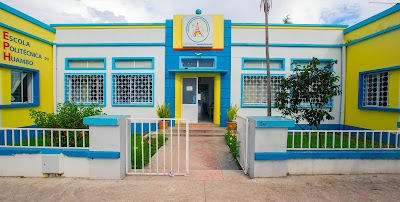

Arão nasceu na provincia de Luanda no municipio de viana no dia 10/04/200?
Filho de alexandre e Ester
É o primeiro entre os seus irmãos, Testemunha de Jeová tem 6 anos
Fez o seu ensino primário na escola primária nº 53 na provincia do Huambo.
Tendo concluido o mesmo na escola primária Cariadade de Jesus
O fundamental fez na escola nº 34 do Huambo
Actualmente estuda no CEPPH
